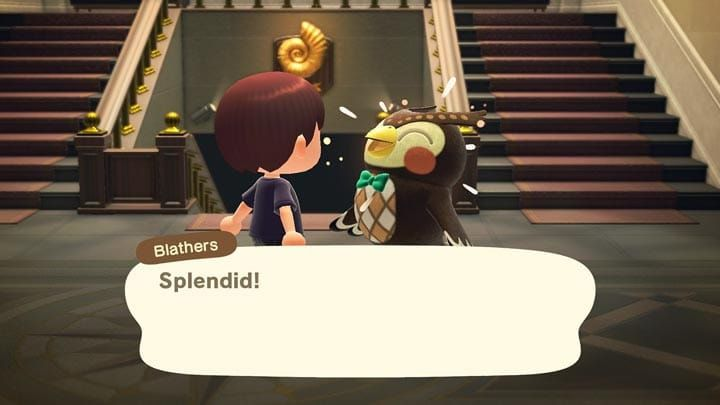
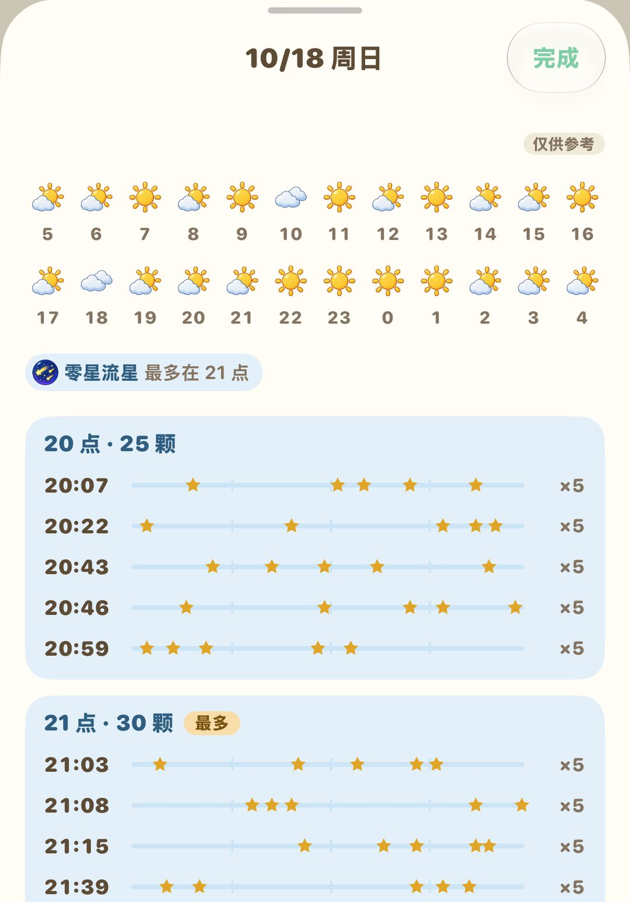

每天上岛做这些就够了
一张日常清单、一周里的固定日子，和一条不走回头路的顺序
岛上每天都会刷新一批东西：埋在地下的化石、能敲出材料的石头、商店新进的货，都在早上 5 点换新。游戏的一天从早上 5 点算起，所以半夜 1 点上线，游戏里算的还是前一天，要等过了 5 点才轮到新的一天。
每天要做的事看着零碎，其实大部分绕岛走一圈就能顺手捡完。再记住一周里的三个固定日子：周日上午买大头菜，周一旅馆委托换新，周六晚上听 K.K.。路线排顺了，先把口袋清空再进店，一般二三十分钟就能做完。
01绕岛一圈要捡的
出门先带上铲子，沿着岛走一圈，下面几样每天都有。
化石
地上有星形裂缝的地方埋着化石，每天 4 个。挖出来先拿去博物馆请傅达鉴定，博物馆里缺的就捐掉，重复的留着卖钱。

挖到的化石拿去博物馆给傅达鉴定（英文版画面）（图：任天堂）
石头
岛上的石头每天都能敲出石头、黏土、铁矿石，偶尔还会蹦出金矿石。其中一块是摇钱石，敲出来的是铃钱。敲之前在自己身后挖几个坑把退路堵上，人就不会被弹开，能连敲 8 下，一块石头的份一次敲满。
发光点
每天地上会有一处在闪闪发光，挖开是一袋铃钱。挖完别急着把坑填上，往坑里埋铃钱就能种发财树，长大以后结出三袋同样金额的钱。玩家的经验是埋 1 万以内比较稳。
瓶中信
沙滩上每天会漂来一个瓶中信，瓶子里装着一份DIY手册，绕海边走的时候顺手捡起来。
气球
天上偶尔飘过挂着礼物的气球，掏出弹弓把它打下来，掉下来的可能是铃钱、材料，也可能是家具。
02岛民和访客
岛民每天都去搭几句话，关系会慢慢变好，偶尔收到礼物，也会被请去帮点小忙。
每天有一位岛民待在家里对着工作台做东西，进门聊一下就能学到一个新做法。路过岛民家时挨家进去看看，找到正在做 DIY 的那位。
工作日几乎每天都会来一位特别访客，可能是卖地毯的骆岚、收鱼的俞司廷、收虫的龙克斯，也可能是卖花苗的然然。要是在海边看到晕倒的吕游，叫醒他、帮他找齐零件，之后他会寄礼物来。每位访客具体怎么用，可以看《每周会来的 NPC》那篇。
露营地有人来露营，也记得过去聊聊，岛上有空位的话，可以邀请对方搬来。
03逛一圈店
Nook商店每天都会换一批家具和DIY手册。门口写着当天的热门家具，这天卖给商店是两倍价。手上正好有这件家具，或者材料够做一件，当天卖掉最划算。
裁缝店每天换一批衣服鞋帽。进试衣间还能试穿、买到当天店里没摆出来的款式，想找某件衣服时别只看货架。
服务处的狸端机里，「Nook购物」每天有一组「每日替换」，图鉴里缺的先订下，第二天寄到。顺手在「Nook集里游＋」把做完的任务点一下，领掉里数。
| 店 | 营业时间 |
| Nook商店 | 8:00～22:00 |
| 裁缝店 | 9:00～21:00 |
裁缝店晚上 9 点、商店晚上 10 点就关门了。晚上才上线的话，先去店里，捡东西的事放到后面。
04码头和旅馆
岛屿评价到 3 星后，码头会停着航平的船，每天可以花 1,000 里数坐一趟去别的岛。那边的季节、天气可能和你岛上不一样。
如果已经开了旅馆，每天还要多跑这几件：
8 间客房还没布置完时，每天最多布置 2 间，每间 200 旅馆券。每天把这 2 间用掉，客房能早点布置完。
码头的 DIY 收集箱挂着 4 个委托，照着做好交进去，就能换旅馆券。
旅馆纪念品店每天会摆出两件打折家具，路过看一眼。
解锁 VIP 客房以后，每天能布置一间。
旅馆的详细玩法见《3.0 度假酒店》那篇。
05晚上看流星，记住一周的节奏
晴朗的夜里偶尔会有流星划过。手里别拿工具，抬头按 A 许愿，第二天早上海边就会有星星碎片，能拿去做星座家具和各种棒子。流星雨那天，西施惠早上会在广播里预告，傅珂也会来岛上。
想提前知道哪天、几点有流星，可以在动森圈圈的天气预报里输入岛屿种子来查。

天气预报：每小时的天气，和哪几分钟有流星
除了每天的事，一周里还有几个固定日子，错过了就要再等一周：
| 日子 | 要做的事 |
| 周日上午 | 曹卖来卖大头菜，中午 12 点前走 |
| 周一到周六 | 商店收大头菜，上午、下午各一个价 |
| 周一 | 旅馆收集箱的委托整批换新 |
| 周六晚上 | K.K. 在广场开演唱会，点歌拿唱片 |
注意周日买的大头菜到下个周日就坏了，记得在周六商店关门前卖掉。
06一条省时间的路线
每个岛的布局都不一样，路线没法照抄，但思路是通的：先把口袋清空，少跑回头路。下面这个顺序可以照着改。
1. 出门先听西施惠的广播，弄清当天有谁来、晚上有没有流星雨。
2. 带上铲子沿海岸绕一圈，挖化石、敲石头、捡瓶中信、挖发光点。
3. 路过岛民家进去看看，找到正在做 DIY 的那位；广场上有访客的话，顺便过去打个招呼。
4. 去博物馆鉴定化石，再到商店把口袋里的东西卖掉、看一眼热门家具，接着逛裁缝店。
5. 到服务处，在狸端机看每日替换、领里数，铃钱存进 ATM。
6. 最后去码头和旅馆，布置客房、交 DIY、逛纪念品店。
天天做的事反而最容易漏掉一两样。动森圈圈有每日清单，打开勾一勾，做完哪些一眼就清楚。

小程序里的每日清单，菜价、访客、航平记过就自动勾上
当然也不是每样都非做不可。哪天只想钓鱼，那就去钓鱼，岛不会跑。
动森圈圈 · 小程序和 iOS App 都搜「动森圈圈」